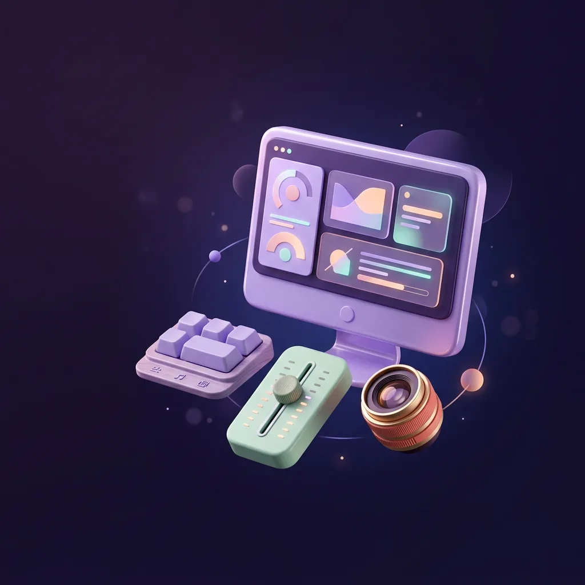

Find your fit.
Explore the collection and choose the tool that works for what you want to make.
MADE FOR CREATIVE PEOPLE
A thoughtful collection of plugins and apps to help you create, stream, and make a little more magic.
Made for the way you create.
13 useful tools, all in one happy place.

THE COLLECTION 01 / 03
Made to take the little things off your plate, so you can get back to making the big things happen.
Try a different search or take a look at the full collection.
Checking available downloads. GitHub Actions builds are also available; sign-in may be required and artifacts can expire.
NICE AND SIMPLE 02 / 03
Good tools should be easy to find. We’ve brought everything together so you can get started with confidence.
Find your toolExplore the collection and choose the tool that works for what you want to make.
Download the ZIP, or open its successful GitHub Actions build when a direct download isn’t available.
Check the requirements and follow the installation guide for your chosen tool.
A NOTE FROM THE MAKER 03 / 03
From a more organized stream to a little extra creative confidence, these tools are here to make your workflow feel a little lighter.
Created by Emmanuel Suah and built in the open. Explore the source, read the guides, and make something wonderful.
Explore the repositoryA LITTLE SOMETHING FOR YOUR NEXT BIG THING